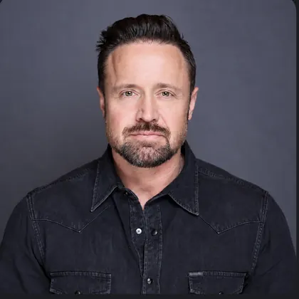

Support operations & team leadership
Multichannel support, banking and ISP accounts, escalations, collections, SME support, QA, agent guidance and team leadership.
REMOTE OPERATIONS / CRM / TECHNICAL DELIVERY
Operations lead. Hands-on technical problem solver.
I've spent 11+ years in customer support, team leadership and technical delivery. I've led support work across 12 businesses and built or tested the systems behind it: GoHighLevel workflows, websites, booking paths, API integrations and email delivery.
Based in the Philippines. Open to long-term remote roles and selected projects.
WHAT I DO
These are the parts of the job I have done myself, from handling escalations to checking whether a workflow actually fires.
Multichannel support, banking and ISP accounts, escalations, collections, SME support, QA, agent guidance and team leadership.
Client website and landing-page deliverables, website production, branding-asset implementation, responsive QA, deployments, DNS, SSL and launch handoffs.
Delivered GoHighLevel workflows for clients: pipelines, lead routing, forms, booking calendars, automation triggers and follow-ups, connected through APIs and webhooks where needed.
DNS and email authentication, transactional email checks, appointment paths, CRM connections and AI voice demonstrations.
I started in frontline support and moved into team leadership, CRM systems and technical implementation. Open a role to see the work.
Worked directly on client deliverables, producing AI-assisted websites and landing pages, preparing and implementing logos and branding assets, and building GoHighLevel pipelines, workflow automations, lead routing, forms, calendars and follow-up sequences. Connected third-party services with REST APIs and webhooks; handled GitHub/Vercel deployment, Cloudflare DNS, SSL, domain verification and SPF/DKIM/DMARC. Tested responsiveness, submissions, workflow triggers, booking routes and email delivery before handoff. Also supported management by reviewing records across numerous client accounts, auditing onboarding and closer-calendar connections, and following up on delivery blockers.
Progressed from customer service into team leadership. While managing the team, handled support operations for 12 businesses across clinics, car rentals, route guidance, wound-care facilities, grocery order taking, food order taking and other services. Guided agents, handled escalations and quality reviews, and supported e-commerce cases using Shopify, Amazon and Zendesk. Configured GoHighLevel contact segments, funnels, calendars, pipeline stages, lead-routing rules and automated follow-up workflows.
Outbound sales and cold calling, health-insurance-related outreach, CRM records, communication reviews and QA follow-up.
Account and service inquiries, case notes, customer communication, escalations and follow-up in a high-volume BPO environment.
Service and connectivity diagnostics, technical troubleshooting, step-by-step customer guidance and escalation documentation.
Collections conversations, account verification, payment follow-up and accurate case records for financial concerns.
Frontline technical troubleshooting, service assistance, diagnostics, customer guidance and documented outcomes.
Earlier BPO assignments included banking and financial-services concerns, ISP support, collections and multichannel customer service. I also handled part-time email support at Vanilla Numbers. Specific client account names and unconfirmed dates are omitted.
FEATURED PROJECTS
Two public projects and a summary of the client delivery work I can discuss without exposing private accounts.
INDEPENDENT BUILD / LIVE
My independent business site for website delivery, workflow demos and connected contact systems.
INDEPENDENT BUILD / LIVE
An Amazon affiliate product-discovery website that organizes practical pet finds, comparison notes and buying guides by real dog-owner needs. Visitors research products here and complete purchases on Amazon.
CLIENT DELIVERY / PRIVATE WORK
My client work at AI Acquisition included: websites and landing pages, logo and branding assets, GoHighLevel workflows, forms, calendars, lead routing, third-party integrations and domain/email configuration.
I handled implementation and tested site responsiveness, submissions, workflow triggers, routing and booking paths before handoff. Client details remain private.
IMPLEMENTATION AREAS
CASE STUDIES
Real responsibilities and checks. I am leaving out revenue or conversion claims I cannot substantiate.
AI ACQUISITION / CLIENT DELIVERABLES + MANAGEMENT SUPPORT
Technical implementation and delivery QA
Worked across client deliverables, including AI-assisted websites, landing pages, logos and branding assets, GoHighLevel pipelines and workflows, forms, booking calendars, lead routing, APIs, webhooks and deployment configuration.
Also reviewed client records across numerous accounts, checked onboarding handoffs and closer-calendar connections, and flagged overdue work, unclear ownership and client dependencies. These are delivery and QA activities, not claims about client revenue.
Websites / Branding / GHL / Integrations / QAPROCLICK / CUSTOMER OPERATIONS
Multi-industry team leadership and quality
Progressed from customer support to team leadership, managing support operations across 12 businesses, including clinics, car rentals, route guidance, wound-care facilities, grocery order taking, food order taking and other services. Supported agents, resolved escalations, monitored quality and worked on GoHighLevel workflows.
ProClick owner Alfred confirmed that progression in his five-star Upwork review.
Read Alfred’s reviewFeedback from people I worked with. The two Upwork five-star reviews are labeled; written recommendations have no numerical rating.
Ajell was an outstanding freelancer who consistently demonstrated dedication, professionalism, and a strong work ethic. He started as a Customer Service Agent and, through his hard work, commitment, and excellent performance, earned a well-deserved promotion to Team Leader.
Throughout his time with the company, Ajell proved that he was not only capable of delivering excellent results but also had the leadership skills needed to guide and support others. He showed initiative, took responsibility for his tasks, and maintained a positive attitude even when facing challenges.

You have been a joy to work with. You have been incredibly present, punctual, knowledgeable, and reliable. You have made my job and life a lot easier because you were such a great go-to person who wore a lot hats and ALWAY delivered.

Ajell was a strong support to the team. He was punctual, dependable, and adaptable, and I appreciated how willing he was to step in and help where needed.
The beeeest!!!

I had the opportunity to work with Ajell at AI Acquisition, where he supported our team across website implementation, GoHighLevel systems, technical operations, and management support.
What I appreciated about Ajell was his ability to identify problems, investigate what was causing them, and focus on getting things resolved. Whether he was reviewing client records, checking onboarding processes, identifying overdue tasks, or working on technical implementations, he consistently paid attention to the details that could affect client delivery.
Ajell brings a valuable combination of technical knowledge, operational experience, and a problem-solving mindset. He understands that completing a task is only part of the job. Making sure the system or process actually works is what matters.

A BIT ABOUT ME
I started by taking customer calls and resolving technical issues. Later, I led support teams and began working on the CRM setups, booking workflows and websites those teams used every day.
That background affects how I build: I check the handoff, test the booking link, follow the lead through the workflow and look for anything that would leave a customer waiting.
See complete work historyGET IN TOUCH
I’m interested in long-term remote roles in operations, technical support, CRM implementation and delivery. If those areas overlap with what your team needs, I’d like to talk.